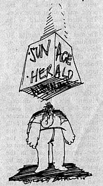

|
By
ROBIN HOWELLS
in Melbourne
WITH THE
release of a detailed content analysis of four Melbourne
newspapers during the period november 12 to december 5, a
Latrobe university research team led by Patricia Edgar has found
evidence of serious bias in their coverage of the federal
election campaign.
The study confirms that Gough Whitlam is correct in claiming
that the press played down the ALP campaign. It also shows that
Rupert Murdoch's statement that the Australian has
"gone to great lengths to keep the bias out of it and keep
a fair and equal reporting, particularly in the Australian
where there are many pages of reports every day, fair and equal
to both parties", is not borne out by analysing the paper's
editorial content.
In
carrying out the survey the team classified articles as being
either favorable or unfavorable to the political party being
discussed. No attempt was made to assess any sort of bias in
reporting. Whenever there was any doubt about any article, or if
it was thought it could be interpreted either way, the article
was classified as "neutral". Because of this, the team
believes its analysis represents a conservative estimate of
press favoritism.
It
looked at editorials, news reports, letters to the editor,
commentaries and analyses by named journalists, non bylined news
reports and pictures. It measured space in column centimetres
and noted page location and the number of articles favorable to
either party or neutral in content.
Assessing editorials, it found they revealed a strong anti Labor
bias in all newspapers except the Sun. The Sun
does not have a daily editorial, probably because they think
their readers couldnt cope. In the Age, 54.15 percent of
editorials on the election were unfavorable to Labor; 14.32
percent unfavorable to the Liberal/NCP; and 24.49 percent
neutral. The team notes with some irony that the only Age
editorial favorable to Labor was printed the day after Whitlam's
sacking.
The Australian and the Herald were more blatant in
their bias than the Age. Neither had an editorial
favorable to the ALP and, just to reinforce that the medium is
the message, they managed to print no editorials unfavorable to
the Liberals. Only two out of 23 editorials in the Australian
were neutral, compared to four out of 11 in the Herald.
It was also found that the Australian devoted nearly
twice as much space as the Age to editorials and almost
four times as much as the Herald.
Looking at analytical articles by news commentators it found the
majority of articles in all four papers were neutral. In the Age
neutral articles comprised 53.33 percent of the total, in the Australian
65.22 percent, in the Herald 64.29 percent and in the Sun
61.54 percent. However the Australian's bias was really
showing in the remaining 34.53 percent of commentators' articles
which were either unfavorable to Labor or favorable to the
Liberal/NCP. This contrasted with the other three papers where
the remainder of their commentaries tended to favor Labor rather
than Liberal.
With political news reports by named journalists it was found
that 40 percent in the Age favored Labor, 30 percent
Liberal/NCP and 16.67 percent were neutral. In the Australian
35.48 percent favored Labor and 12.91 percent Liberal, while
35.48 percent were neutral. |
 |
The contrast
between the Herald and Sun is quite marked and may
indicate one reason why the Herald continues to have
circulation losses. In the Herald only 15.38 percent
favored Labor and 38.46 percent favored Liberal, with 23.08
percent neutral. In the Sun 37.5 percent favored Labor,
12.5 percent favored Liberal and 37.5 percent were neutral. When
it looked at political items by unidentified writers the Latrobe
university media centre research team found a major contrast
apparent between them and news reports by named journalists.
This was most noticable in the Australian and appears to
bear out the concern of working journalists on the Australian
who struck this week because of alleged bias in the paper.
Of
the space given to political reports by unnamed journalists in
all four newspapers, 44.7 percent of the total appears in the Australian.
When these articles were analysed it was found that 25.55
percent were unfavorable to Labor, while only 6.94 percent were
unfavorable to the Liberals. Articles favorable to the Liberals
comprised 26.64 percent while 15.32 percent favored Labor.
The team points out how this contrasts with the 35.48 percent of
the political news reports by named journalists in the Australian
which favored Labor and only 12.9 percent which favored Liberal.
It points out very coolly that this may reflect different views
on the part of working journalists on the Australian
compared with the views of their proprietor.
In
looking at page placement of articles the Latrobe university
team points out a trap for the unwary. It says the pattern of
positive emphasis towards Labor in the Age, for articles
by named and unnamed journalists, has to be modified
dramatically in the light of page placement.

Although
quantitative evidence suggests that page placement does not
favor either major party, they quote examples of articles on
issues seen to be important in the campaign which suggest that
qualitative analysis would show a different trend.
It
also draws attention to the problem of which news items are
highlighted and which are not and points out that this is most
evident in the survey where items of major importance are given
low priority in terms of page placement and column centimetres.
Other problem areas in the survey were with selective headlining
and decisions regarding relative news worthiness of
personalities or "authorities" who took sides in the
electoral dispute.
After giving a number of examples from papers of each problem
area the report concludes on a sober note. It states that a
thorough qualitative analysis would be needed to reveal the
extent of the nature of bias in the press. However, it believes
that the quantitative data in the report shows that the reading
public should view press reports of the political campaign with
scepticism. |